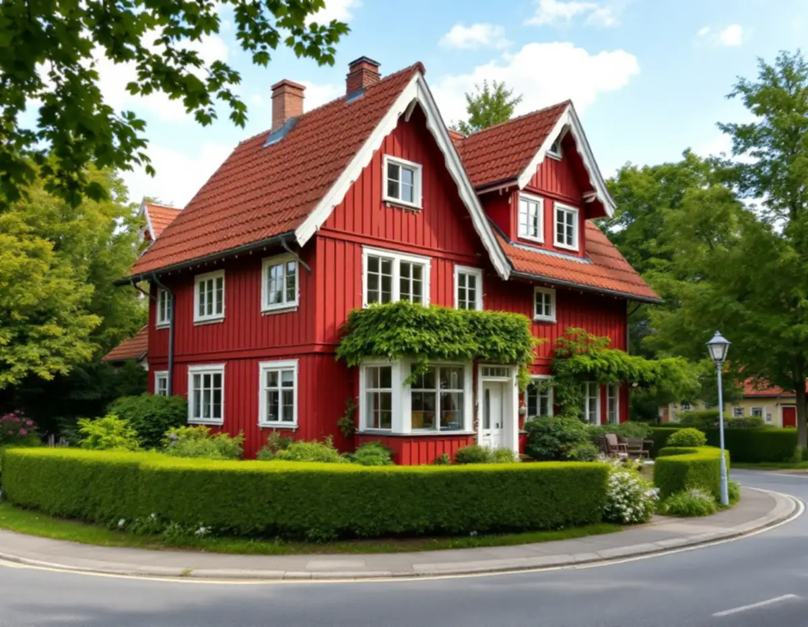
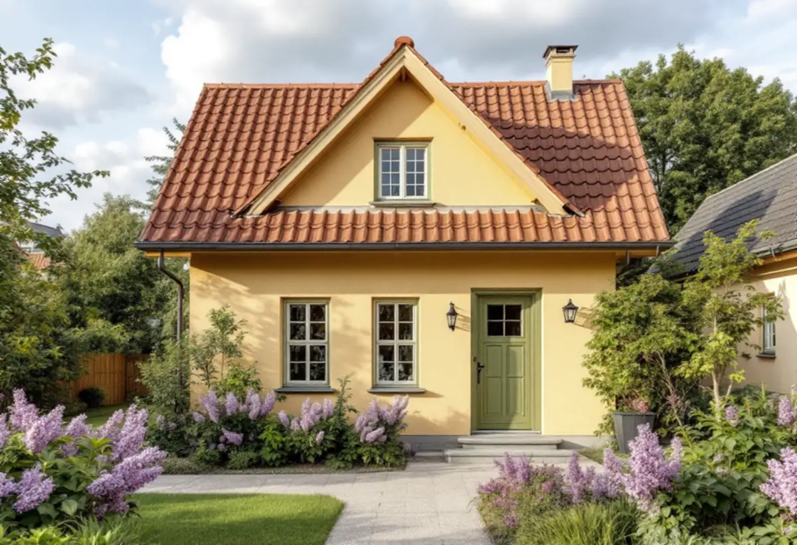
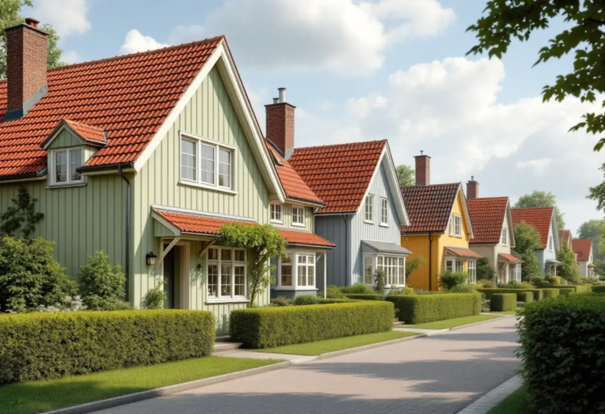

Platsbesök
Fasaden, snickerierna och färgtypen går vi igenom.
Gamla Enskede var Stockholms första trädgårdsstad, och fasadernas kulörer är en del av det som gör området till riksintresse. Geal Entreprenad AB målar om fasader på villor och radhus i Gamla Enskede, Enskededalen och Enskedefältet och utgår från vad huset hade från början.

Gamla Enskede anlades efter stadsplanedirektör Per Olof Hallmans stadsplan från 1908, skriver staden i sin strategi för småhusområden. Typritningar togs fram för ett enhetligt uttryck, och den mest kända är Enskedestugan. I Gamla Enskede blev det nationalromantiska inslaget tydligt, med branta takfall och fönster med småspröjsade rutor.
Fasaderna var ofta liggande träpanel eller spån som tjärades eller målades med röd slamfärg, och även puts förekom. Gamla Enskede är riksintresse för kulturmiljövården, och enligt stadens områdesfakta för 2025 finns där 898 småhus med äganderätt.

Strategins exempel från Gamla Enskede visar trähus som ofta är rödfärgade med vita snickerier. De putsade husen har fasader i varma, ljusa jordkulörer, och färgsättningen bygger på kontrast mellan fasad och snickerier i fönster och byggnadsdetaljer, ofta med fönstersnickerier i en dovare kulör. Slät- och spritputs används som dekor eller för att framhäva en del av byggnaden.
Strategin råder att karaktärsskapande material, kulörer, byggnadsdelar och detaljer tas tillvara eller återskapas så långt det går. Vid en ommålning i Gamla Enskede väljer vi därför kulör för både fasad och snickerier, så att kontrasten finns kvar.
I den fortsatta utbyggnaden blev 1920-talets klassiska formspråk rådande, bland annat i Enskededalen. Husen fick enkla volymer i ett och ett halvt plan, och det vanligaste fasadmaterialet var stående träpanel med tunn lockläkt. Färgskalan gick enligt strategin i ljusa, dämpade toner av grönt, gult eller grått.
Enskededalen och Enskede gård är markerade som kulturhistoriskt värdefull miljö i strategins tabell, och för Enskededalen och Enskedefältet finns också äldre miljöprogram. Programmen har ingen juridisk status i bygglovsprövningen, men staden beskriver dem som ett bra underlag för att förstå områdets karaktär.
Inom ett riksintresse för kulturmiljövården, som visas med blå ring i Stadsmuseets karta, behöver du bygglov för åtgärder som annars är lovfria. Boverket förklarar att en ny kulör, till exempel från rött till vitt, är en fasadändring, medan ommålning i samma kulör normalt räknas som underhåll.
Vill du ändra kulören på ett hus i Gamla Enskede behöver det alltså prövas. Målar du i samma kulör som förut räcker det att vi tar fram rätt nyans. Om fasadmaterialen i Enskede kan du läsa under fasadrenovering i Enskede.
Riksantikvarieämbetet beskriver röd slamfärg som en av de bästa utomhusfärgerna för trähus och den mest underhållsvänliga: gammal färg borstas av, fasaden dammas av och målas oftast i en strykning. Har en röd slamfärg fått en tillsats av trätjära behöver tjära normalt tillsättas även vid ommålningen för att färgen ska fästa och kulören bli jämn.
Kulören kan skilja något mellan tillverkare, och det märks särskilt vid bättringsmålning. Vi tar därför fram kulören mot den befintliga fasaden innan vi beställer färgen, och lagningar med nytt trä målas så att de smälter in. Om målning i stadsdelen i stort kan du läsa under målare i Enskede.

Fasaden, snickerierna och färgtypen går vi igenom.
Äldre kulörer och färgtyp tas fram på en liten yta.
Fasad och snickerier står var för sig.
Samma kulör tas fram, eller ny kulör prövas när det krävs.
Borstning, lagning och strykning i rätt färgtyp.
Vi går igenom resultatet och skriver ner kulörerna.
Skatteverket räknar målning av fasader på ett småhus som rotarbete, liksom att montera och montera ner byggnadsställningen. Du ska äga huset när arbetet utförs.
Avdraget är högst 30 procent av arbetskostnaden, högst 50 000 kronor per person och år och högst 75 000 kronor tillsammans med rutavdrag. Färg, material och resor ger inget avdrag. Geal drar avdraget direkt på fakturan.
Fasadens yta, färgtyp, underlagets skick, mängden snickerier och om kulören ska prövas i ett bygglov. En överblick finns under målare. Efter ett gratis platsbesök får du ett skriftligt kostnadsförslag.
Fasad, fönster och invändig målning.
Målare i Stockholm →Takbyte, takbesiktning och plåtarbeten.
Takläggare i Enskede →Trädgårdsstad med lertegel.
Takrenovering i Enskede →Trädgårdsstaden, kartan och lovet.
Attefallshus i Enskede →Typhus i trä, träbjälklag och bostadsrätt.
Badrumsrenovering i Enskede →Byggplatsen, gatan och träden.
Byggföretag i Enskede →Trähus, putsade typhus och småstugor i Enskede.
Fasadrenovering i Enskede →Fönster i riksintresset.
Fönsterbyte i Enskede →Trädgårdsstadens fönster.
Fönsterrenovering i Enskede →Lut, såpa och olja på fur och gran.
Golvläggare i Enskede →Slipa fram gamla brädgolv i villan.
Golvslipning i Enskede →Typhus, dubbelhus och småstugor.
Köksrenovering i Enskede →Trädgårdsstad, egnahem och småstugor i Enskede.
Målare i Enskede →Snörasskydd, rännor och verandaplåt i Enskede.
Plåtslagare i Enskede →Verandor, entréer och bodar i trädgårdsstaden.
Snickare i Enskede →Takfallet, höjden och riksintresset.
Takbyte i Enskede →Tapet i vindsrum och snedtak.
Tapetsering i Enskede →Små tomter och riksintresse.
Tillbyggnad i Enskede →Renovera innan ni flyttar in.
Totalrenovering i Enskede →